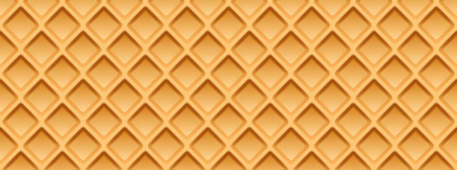

s<!DOCTYPE html>
<html>
  <head>
    <script src="https://aframe.io/releases/1.7.1/aframe.min.js"> </script>
  </head>
  <body>
    <a-scene>
      <a-assets>
        
        
      </a-assets>
        <!-- <a-box position="-1 0.5 -3" rotation="0 45 0" color="#4CC3D9"></a-box> -->

        <!-- <a-cylinder position="1 0.75 -3" radius="0.5" height="1.5" color="#FFC65D"></a-cylinder> -->
        <!-- <a-plane position="0 0 -4" rotation="-90 0 0" width="4" height="4" color="#7BC8A4"></a-plane> -->
        <a-cone src="#cone" position="-5 0 -20" geometry="primitive: cone; radiusBottom: .1; radiusTop: 0.6" height="3"></a-cone>
        <a-sphere position="-5 1.5 -20" radius=".7" src="#ice"></a-sphere>
        <a-sphere position="-5 0 -19.62" radius=".05" src="#ice"></a-sphere>
        <a-cylinder position="-5 0.75 -19.52" radius="0.05" height="1.5" src="#ice" rotation="13 0 0"></a-cylinder>
        <a-sky src="Assets/32258627533_c50ae7ebf2_b.jpg"></a-sky>
        

        <a-cone color="white" position="-5 1 -15" material="transparent: true; opacity: 0.5;" geometry="primitive: cone; radiusBottom: .2; radiusTop: 1" height="1.5"></a-cone>
                <a-cone color="green" position="-5 .8 -15" material="transparent: true; opacity: 0.5;" geometry="primitive: cone; radiusBottom: .23; radiusTop: .78" height="1"></a-cone>
        <a-cone color="white" position="-5 -.5 -15" material="transparent: true; opacity: 0.5;" geometry="primitive: cone; radiusBottom: .1; radiusTop: .2" height="1.5"></a-cone>
        <a-cone color="white" position="-5 -1.5 -15" material="transparent: true; opacity: 0.5;" geometry="primitive: cone; radiusBottom: .75; radiusTop: .1" height=".5"></a-cone>
      </a-scene>
  </body>
</html> 